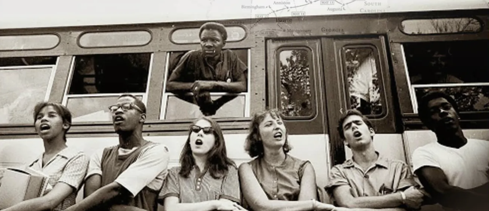
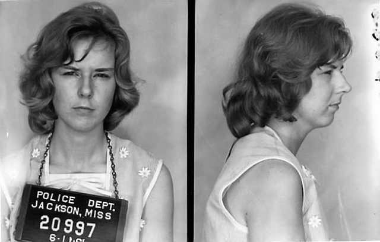

Summer of the Freedom Riders

The Freedom Rides, which began in the summer of 1961, were a significant moment during the Civil Rights movement. Spurred on by a series of Supreme Court cases preceding that summer, a group of students, congressional members, activists, and civilians—organized by the Congress of Racial Equality (CORE)—banded together to force the Jim Crowe South to comply with the growing number of federal desegregation laws. Their goal: to influence federal intervention in the South to get them to adhere to desegregation of interstate transportation via nonviolent protest.
Desegregation of interstate transportation began in 1954 with the Supreme Court decision of Keys v. Carolina Coach Co., where a Black woman and Women’s Army Corps private Susan Louise Keys sued the Carolina Coach Company after a bus driver forced her to sit at the back of the bus during a trip from New Jersey to North Carolina. When she refused, she was arrested. The “separate but equal” mentality had been the legal precedent in the country since Plessy v. Ferguson and Henderson v. United States in the 1950s. Keys v. Carolina Coach Co. was the first time that the Supreme Court had departed from the separate but equal doctrine. However, the Jim Crowe South still refused to do away with state segregation laws, despite the federal rulings. Following Keys v. Carolina Coach Co., a series of Supreme Court cases, including Morgan v. Virginia and Boynton v. Virginia continued to expand desegregation of interstate travel, but southern states held firm.
Inspired by the Journey of Reconciliation, The original CORE Freedom Ride was comprised of 13 members who rode Greyhound and Trailways interstate buses from Washington D.C. to New Orleans between May 14–16, 1961. The goal was to reach New Orleans in time for the anniversary celebration of the Brown v. Board of Education decision in time. They planned to test the 1960 Supreme Court’s Boynton v. Virginia case, which extended the segregation ban to bus terminals, restrooms, and other interstate travel facilities. CORE recruited and trained the first Freedom Riders: seven African American individuals, and six White individuals. Along the way, the group was met with extreme racial violence and little to no protection from local police and federal officials, including then-Attorney General Robert F. Kennedy, who called for restraint out of fear for the Freedom Riders’ safety. However, the Riders’ commitment to civil rights and nonviolence inspired not just the original 13 members but 13 subsequent Freedom Rides across the country between April–December 1961.
By the end of 1961, AG Kennedy had forced the Interstate Commerce Commission to enforce its own desegregation laws in Southern States. The Freedom Riders had paid for the desegregation of transportation across the entire country with their blood, sweat, and tears in one of the strongest cases of nonviolent protest in American history. However, the Civil Rights Movement still had a long way to go. The collective action of the Freedom Rides and the laws that inspired it did not solve the problem of systemized racism in America. The Jim Crow South, as well as many northern states, still attempted to subvert desegregation in many ways. In fact, at the end of 1961, even as AG Kennedy and the Kennedy Administration were attempting to strong arm states into compliance, 15 Episcopal priests were arrested in a Jackson, Mississippi bus terminal for attempting to enter an adjoining segregated coffee shop. They were all beaten and arrested by local police. And the resulting 1967 decision of their Supreme Court case Pierson v. Ray led to legal precedent for what we now know as qualified immunity.
This map highlights significant dates and locations associated with the Freedom Rides that occurred during that summer and fall of 1961, as well as related court cases. While not every stop on the 15 rides are featured, each stop on the map represents a major moment of violence, imprisonment, or legal battles that represent the struggle for civil rights and honors those who fought back via nonviolence in response. Use the slider to see how these moments progressed over time, and click on the bus icons to read more about the moments mentions.

